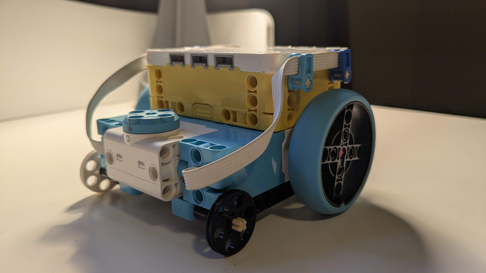
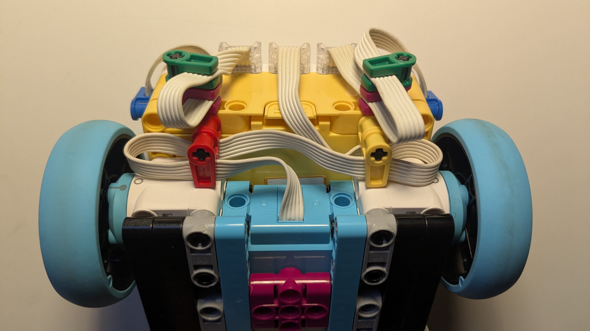

Module 11: Wire Management
This is an extra module dedicated to wire management. This is not centered around SPIKE Prime specifically, and all the previous modules will update every time the former kit is replaced.
It aims to educate you about some common traps when wiring a robot. More often than not, the way your wires look determine a first impression, and how effectively you operate on your robot. A clean, neatly-wired robot will be seen more affably than a messy, scruffy one.
General Wire Management Guidelines
- Wires should not touch the tires/wheels of your robot, and they should sit away from your movement motors at all times
- Wires should be very easy to trace and follow back to the Hub (or any other central electronic component)
- Wires should be connected to components in a logical order, and an example would be having A and B as the movement motors, C and D as color sensors, and E and F as small motors
Example of Bad Wire Management

This is an example of poor wire management. Notice how the wires are protruding out of the small motors. The wires will eventually touch the Hub and the Wheels, providing a risk of damage or malfunction.
Example of Good Wire Management

This is an example of good wire management. Notice how the wires are tucked in and away from the wheels. The wires are also very easy to trace back to the Hub, and they are connected in a logical order.
How the Wires are Tucked Away

In this image, we use wire bundles to tuck away the wires neatly into the robot's structure.